01 / NetworkingPython · Sockets · Tkinter
TCP/IP Chat Application
A client–server chat application that lets multiple users on the same local network exchange messages in real time. The server accepts connections, broadcasts messages and manages users, while each client provides a desktop interface with a username, chat window and saved history.
Problem it solves
On a shared local network, users needed a simple, self-hosted way to communicate in real time without depending on an external messaging service or an internet connection.
- Real-time messaging between multiple connected clients
- Typing indicator, usernames and saved chat history
- Server controls to start, stop and disconnect users